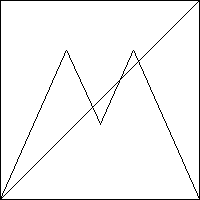

| 15. (a) Because xi+1 = T(xi) for all i, we see |
| xi+2 = T(xi+1) = T(T(xi)) = T2(xi) |
| Then (xi, xi+2) = (xi,T2(xi)). That is, every point of the second return map lies on the graph of T2. |
| (b) First, |
| A = T2(1/2) = T(T(1/2)) = T(3/4) = (3/2) - (3/2)(3/4) = 3/8 |
| To find B < 1/2 with T(B) = 1/2, solve (3/2)B = 1/2, obtaining B = 1/3. (Recall for
|
| To find C > 1/2 with T(C) = 1/2, solve (3/2) - (3/2)C = 1/2, obtaining C = 2/3. |
| (c) We see the point (1/2, T2(1/2)) = (1/2, 3/8) lies on the graph of T2. |
| Next, T2(1/3) = T(T(1/3)) = T(1/2) = 3/4, so |
| Finally, for 0 ≤ x ≤1/3, T(x) lies on the line between 0 and T(1/3) = 1/2,
so T2(x) lies on the line between 0 and T2(1/3) = 3/4. Arguing
similarly for |
|  |
Return to Homework 8 Practice.